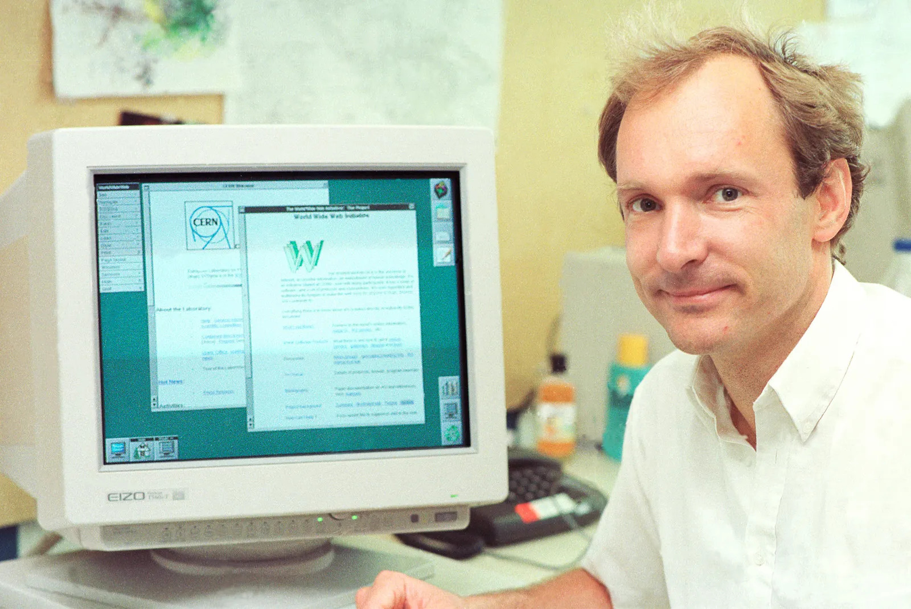

Introduction
Tim Berners-Lee is an English computer scientests that pioneered the creation of the World Wide Web (WWW). He is responsible for the web as it stands today, for not only the creation of it but also for maintaining its decentralized state.
Internet vs WWW
Although these terms are often used interchangably in daily life, they actually mean slightly different things. The World Wide Web is made up of the websites (like this one!) stored on servers, while the internet is the actual web of connections between computers that the WWW operates on. The internet also includes all traffic (packets) that are sent across it, that may contain information such as files, email, etc.
Creation of the WWW
In the days before the World Wide Web, information was stored individually on each computer, which often made searching for a specific file tedious and time consuming as you would often search through multiple computers before finding the correct one.
Tim Berners-Lee, a software engineer at CERN, thought of solving this issue by using the growing internet to share information. The internet back then was mostly used for email, and it could be used to reliably transfer data across the world. Using hypertext, onscreen text interconnected with hyperlinks, he developed a proposal on how such a system could work in March 1989.
By October 1990, Berners-Lee was able to write the most fundamental technologies that make the WWW possible:
- HyperText Markup Language (HTML): Outlines how pages are formatted on the web
- Uniform Resource Identifier (URI): A unique address given to every resource on the web. Also known as the URL
- HyperText Transfer Protocol (HTTP): The protocol that dictates how hypertext (webpages) should be sent across the web
By the end of the year, the first browser and first webserver was launched, and the web was given access to a select few people. However, Berners-Lee realised that it could only reach its true potential if it was free to use for everyone. After some advocation, in April 1993, CERN announced that the underlying frameworks will be accessible to everyone. This marked the start of the World Wide Web as we know it.
Decentralization
The decentralization of the World WIde Web is what makes it so prominent; the true potential of the web cannot be reached without it. If access to the web was restricted, most of the people that surf the web today . As it stands, the vast majority of content on the web comes from its users, and the web wouldn't be at this scale with the lack of the amount of users and web traffic the web sees today.
Upon creation of the web, Tim Berners-Lee created the World Wide Web Consrotium (W3C) that makes sure that coorprations can't put the WWW behind a paywall. Sir Tim Berners-Lee still stands as the director of the W3C to this day.